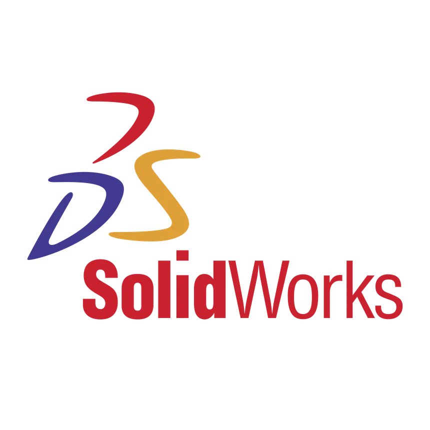
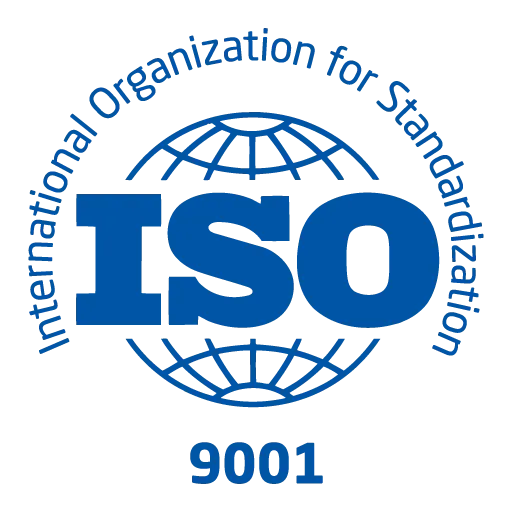

About Me
I’m a data-driven industrial engineer focused on supplier development and quality systems.
I enjoy turning messy manufacturing data into clear decisions, lifting Cp/Cpk, and aligning suppliers to spec through APQP/PPAP, PFMEA/Control Plans, and rapid DOEs.
Recently, I worked in Tesla’s 4680 cell division driving washdown trials, OQC–IQC correlation, and OEE dashboards.


- Collaborated with cross-functional teams to improve manufacturing & supply chain efficiency.
- Drove supplier quality with APQP/PPAP, PFMEA, Control Plans, SPC, and DOE methodologies.
- Developed OEE dashboards and analytics in ZipLabs, Excel, and JMP for data-driven insights.
- Optimized production reliability by integrating MES, CMMS, and SAP PM systems.